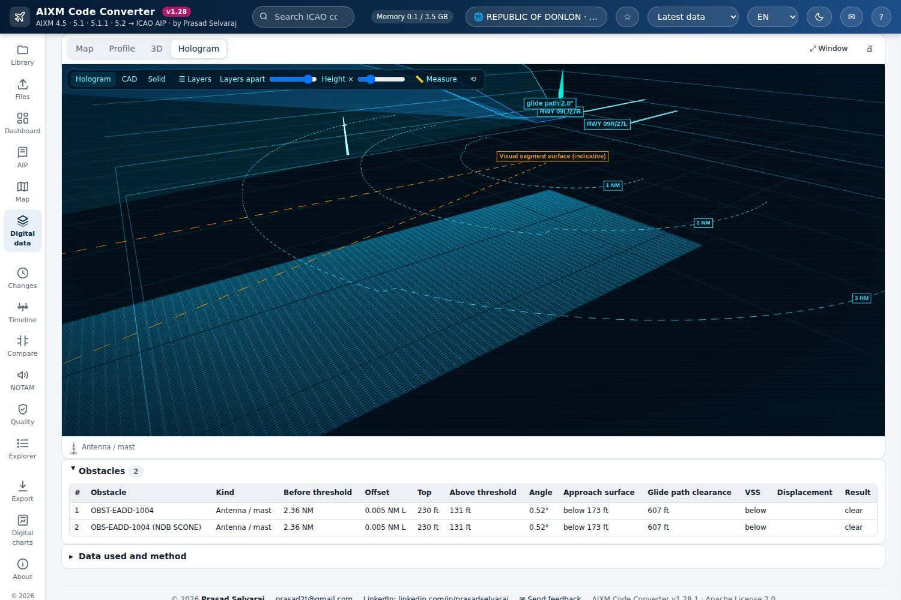
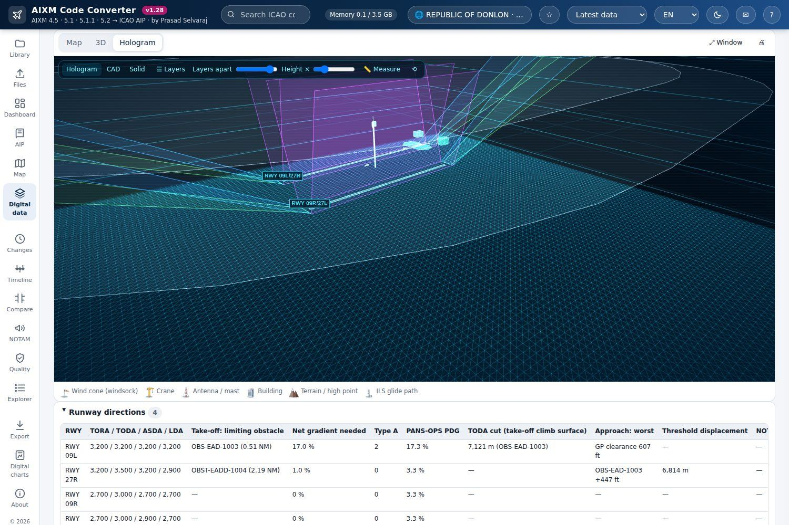
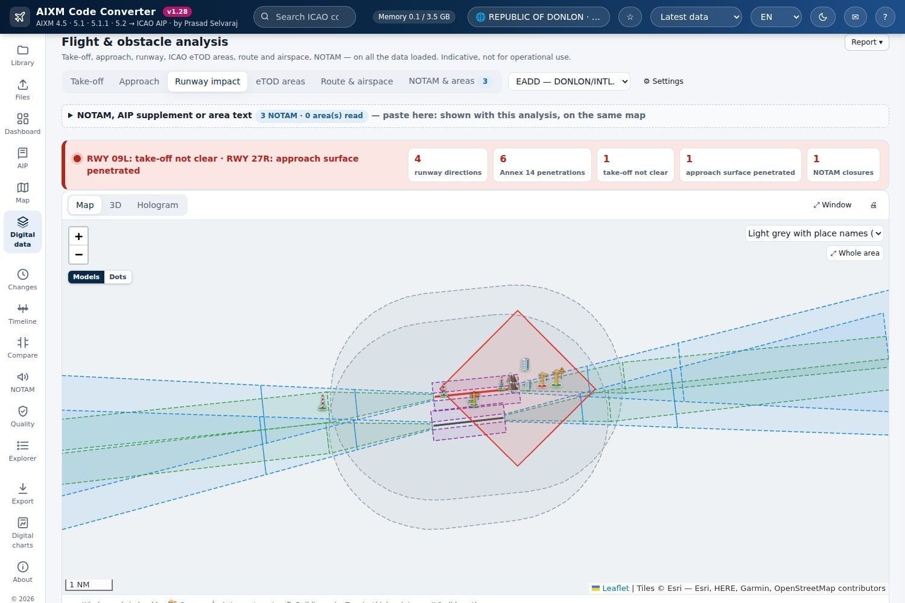
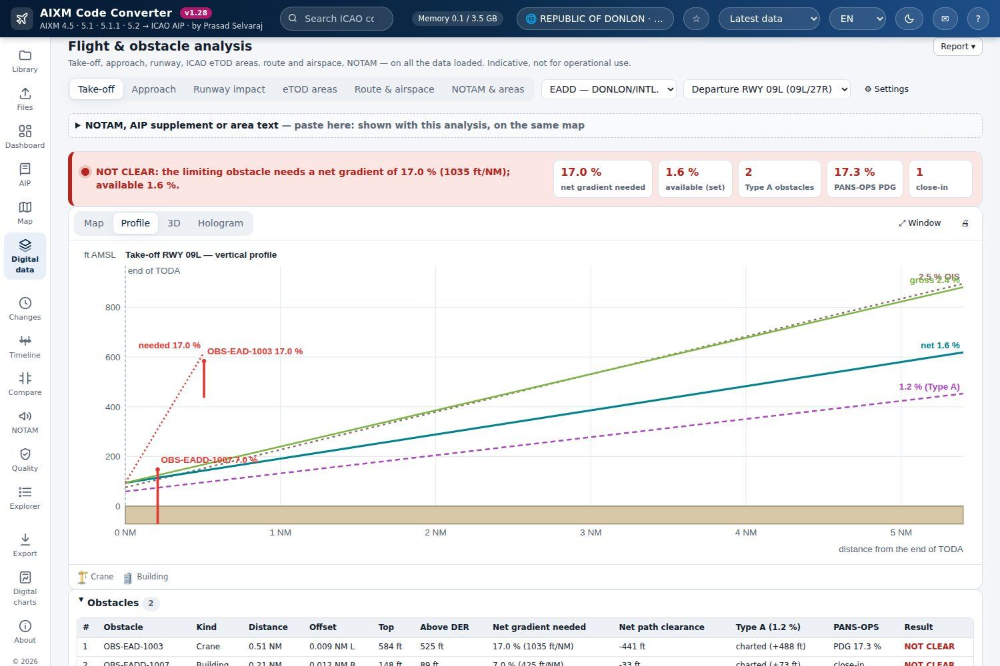
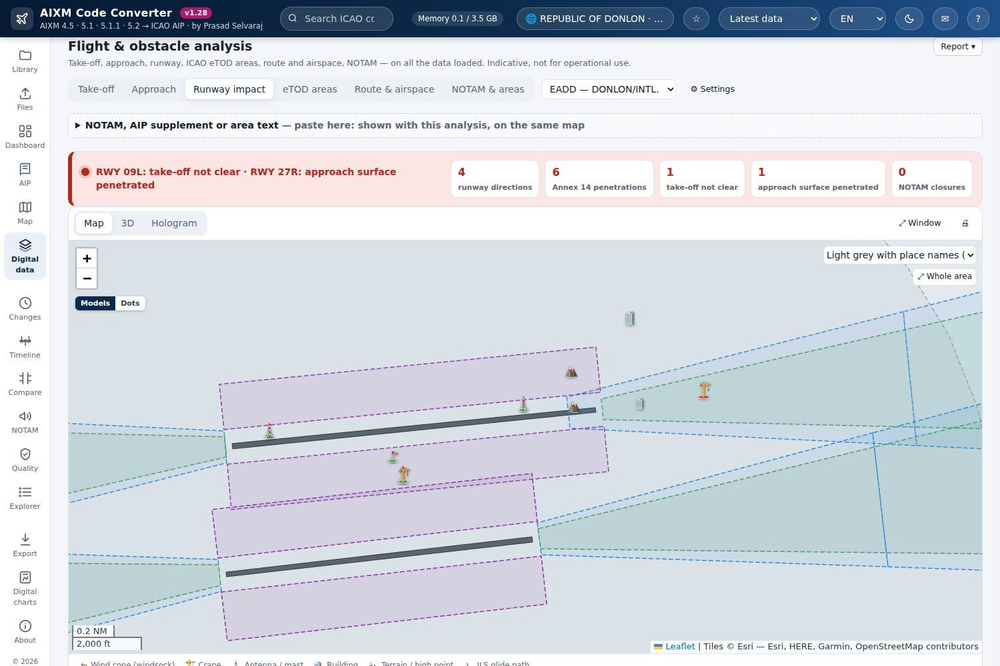
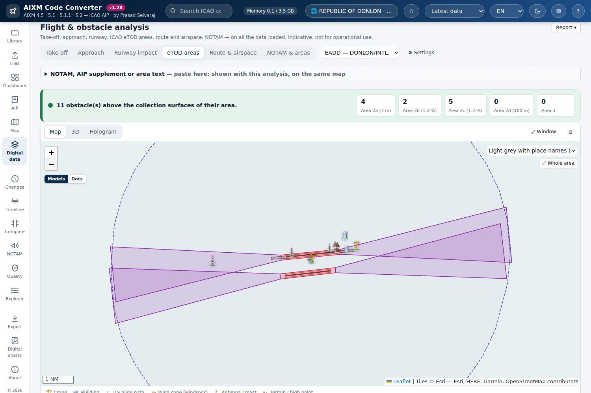
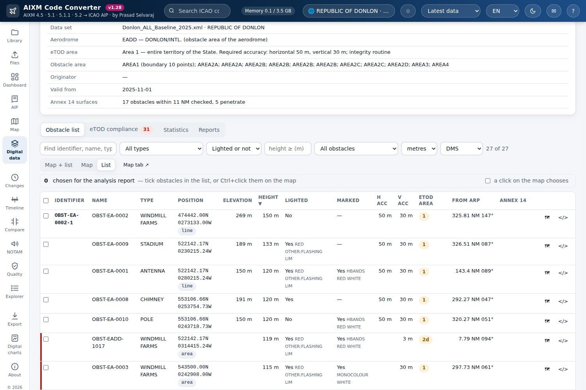
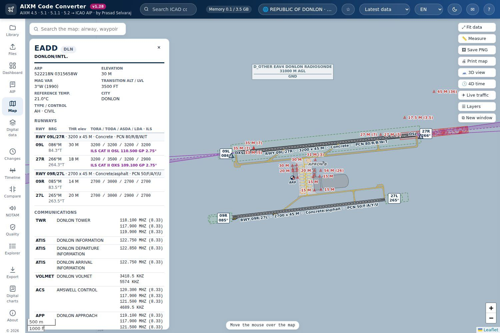
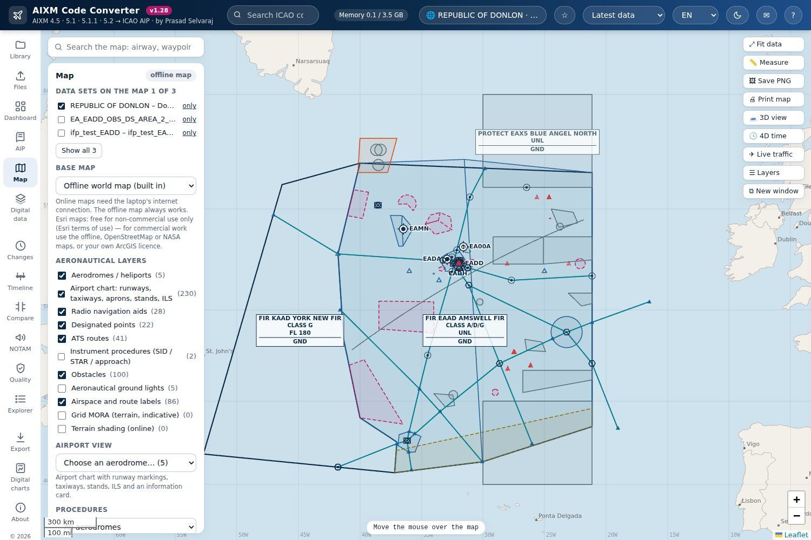
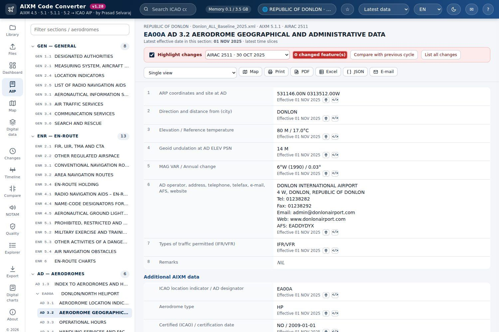

- AIXM 4.5 · 5.1 · 5.1.1 · 5.2
- ICAO Annex 15 / PANS-AIM AIP
- Map · 3D · hologram
- Offline · single file
How to use
No account, no server and no installation.
- DownloadSave AIXM-Code-Converter.html with the Download button at the top, or the ZIP with licence and sample files.
- OpenDouble-click the file. It opens in Chrome or Edge and works without internet.
- Add your filesDrop AIXM files (.xml, .aixm or .zip) and press Extract. No AIXM file? Press Try it with sample data in the tool, or get sample files. Files of several GB are supported.
No AIXM file yet?
Most people do not have an AIXM file at hand. The tool has a Try it with sample data button on its Files page that opens the Donlon sample in one click, with no download. You can also save the sample files, then try real data from one of the sources below.
Donlon sample files
The AIP, obstacles and flight procedures of Donlon, the fictitious State of EUROCONTROL and the FAA, and a copy with the changes of a later AIRAC cycle to try Changes and Compare. About 1.5 MB. Not real data: never for operational use.
FAA NASR subscription
United States airports, navaids and airways in AIXM 5.1 and special activity airspace in AIXM 5.0, every 28 days, free of charge. Open the FAA page
FAA Digital Obstacle File
United States obstacles. The tool reads it under Digital data, Obstacles. Open the FAA page
Donlon 2025 on GitHub
The AIXM community's own copy of the fictitious State, with other sample data sets and tools. Open on GitHub
EUROCONTROL: Donlon specimen AIP
How the fictitious AIP data set is coded in AIXM. Open the page
Temporary restrictions
AIXM 5.1 data sets that some States publish with their AIP supplements. Open the EUROCONTROL list
aixm.aero
The AIXM community: schemas, documentation and examples. For your own State, ask its AIS office. Open aixm.aero
Check the terms of use of each provider. This page only links to them; the files come from the providers, not from this tool.
All screens
The same ten screens as in the slideshow. Click one to open it full size.
What it does
For AIS / AIM specialists, data originators, procedure designers, airports and anyone who needs to read aeronautical data without reading XML.
AIP view
GEN, ENR and AD laid out as in the ICAO specimen AIP. Every value links to the exact AIXM code behind it.
Map, 3D and hologram
Airspace, routes, navaids, procedures and obstacles on a map, in 3D with terrain, and as layered hologram, solid and CAD views.
Obstacle and flight-path analysis
Take-off, approach and runway impact, ICAO eTOD areas, route and airspace, with NOTAMs on the same map.
AIRAC changes
What changed, where and when: baselines, permanent and temporary changes, and a comparison of two cycles.
Quality checks
AIXM business rules, data completeness, CRC32Q integrity and Annex 14 obstacle limitation surfaces.
Digital data and exports
eTOD obstacles, aerodrome mapping, flight procedures and terrain. Export AIXM, GeoJSON, KML, Shapefile, GeoPackage, Excel and PDF.
Not for operational use. The AIXM Code Converter is for study, analysis and data review. It is not for navigation and not a certified aeronautical data product. The screens above use the fictional Donlon sample data published by EUROCONTROL.